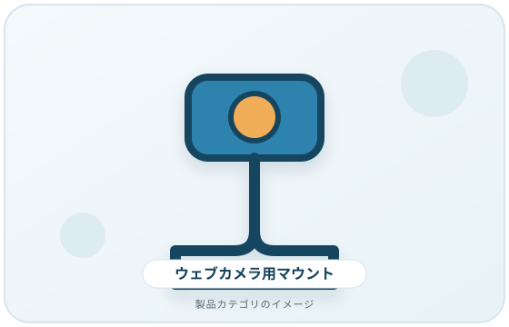
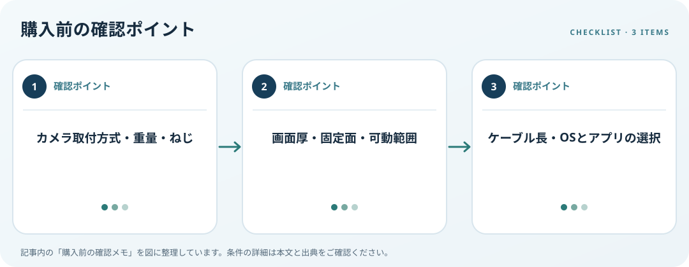

カメラの取付方式と重量、設置面、可動範囲、配線を照合します。この記事では仕様の確認順を整理します。
画像・ボタンはAmazonアソシエイトリンクです。適格購入により紹介料を得る場合があります。

Amazon.co.jpで「ウェブカメラ 三脚 マウント」を探す ↗

カメラ側の取付方法を調べる
底面ねじ穴、クリップ形状、メーカーが指定する取付方法を仕様書で確認します。ねじ径やアダプターは製品ごとに異なるため、一般的な三脚用という表示だけで適合と判断しません。カメラと取付部品の合計重量が許容範囲内か見ます。
画角と固定面を想定
モニター上、机、棚、三脚など設置場所を決め、会議時の目線とカメラ位置を考えます。クリップ式なら画面厚やベゼル、開閉時の干渉を測ります。アーム式では関節を動かした時に画面を揺らさないか、固定ネジに手が届くかも確認します。
配線とOSの操作を確認
USBケーブルが必要な角度まで届くか、コネクターが無理に曲がらないか測ります。Windowsで接続カメラを選ぶ設定やプレビューが使えるか確認します。物理マウントを取り付けてもアプリ側のカメラ選択や権限は別に設定する必要があります。
購入前の確認メモ
- カメラ取付方式・重量・ねじ
- 画面厚・固定面・可動範囲
- ケーブル長・OSとアプリの選択
この記事は出典の公開情報を購入前の確認項目に整理したもので、特定商品の使用・実測・レビュー・ランキング・価格・在庫の調査は行っていません。購入時には利用機器メーカーの最新仕様をご確認ください。
出典
- Manage cameras — Microsoft（確認日: 2026-10-10）
- Monitors — OSHA（確認日: 2026-10-10）
- Workstation Evaluation — OSHA（確認日: 2026-10-10）